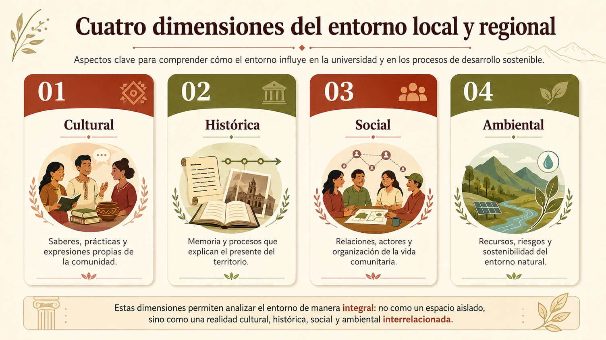

Hasta este punto hemos analizado el territorio como espacio social, cultural, histórico y ambiental; estudiamos la participación comunitaria y discutimos los principios de equidad e inclusión. Ahora necesitamos invertir la mirada, entonces la pregunta ya no es únicamente qué puede hacer la universidad en el territorio sino qué ocurre con la propia universidad cuando reconoce que forma parte del territorio.
Éste es el punto de partida para comprender la territorialización de la universidad. Territorializar no significa simplemente salir del campus, significa que una universidad puede realizar actividades en comunidades, organizar campañas, enviar estudiantes a realizar prácticas o desarrollar proyectos de extensión sin modificar realmente su relación con la sociedad.
Territorializar la universidad supone algo más profundo, es la necesidad de deconstruir la exterioridad tradicional con la que la academia mira a la sociedad y asumir que la universidad es una participante más del territorio en el que se desenvuelve. Esto, como hemos visto, significa abandonar la idea de que la universidad llevará o aplicará el conocimiento a la sociedad, de hecho hay una retroalimentación mutua como se muestra en el siguiente diagrama:

Como puedes apreciar en el diagrama en esta relación circulan conocimientos, preguntas, problemas, experiencias, necesidades y aprendizajes en ambas direcciones. Lo podemos expresar también mediante la imagen mental: la extensión debería ser una puerta que “abre hacia afuera y también hacia adentro”. Es decir, la universidad enseña, pero también aprende; habla, pero también escucha; produce conocimiento científico, pero entra en diálogo con otros conocimientos.
Garaño y Harguinteguy (2021), proponen pensar conjuntamente tres categorías para entender la territorialización como movimiento institucional: territorio, territorialización y praxis. Sostienen que territorializar la universidad exige revisar permanentemente las prácticas y construir estrategias que impidan la reproducción endogámica del conocimiento académico. El territorio se convierte entonces en un espacio donde aparecen situaciones imprevistas y problemas que pueden desbordar lo previamente planificado, haciendo indispensable la reflexión sobre la propia práctica.
Esto tiene una consecuencia importante, que el territorio no es simplemente un lugar al que la universidad va. El territorio transforma también a la universidad pues modifica preguntas de investigación, interpela contenidos curriculares. obliga a revisar metodologías, cuestiona prejuicios, genera nuevas relaciones institucionales, hace visibles problemas que quizá no aparecían desde el aula e introduce conocimientos que no se originaron dentro de la academia. Es precisamente este movimiento el que permite hablar de una universidad territorializada.
Territorializar implica también cuestionar la idea de que la universidad posee automáticamente la interpretación correcta de los problemas. Por ejemplo, las organizaciones populares deben ser reconocidas como copartícipes de los procesos educativos y como sujetos epistémicos, así la universidad aprende del territorio y en el territorio mediante un quehacer compartido. Esto no significa renunciar al conocimiento científico, por el contrario, significa cambiar la relación entre conocimientos.
Pues mientras la universidad aporta metodologías, teorías, capacidades técnicas, investigación, infraestructura y formación profesional, las comunidades aportan experiencia cotidiana, memoria, conocimiento territorial, prácticas culturales, redes sociales, formas de organización y estrategias construidas históricamente. De esta manera, la territorialización consiste en generar condiciones para que esos conocimientos puedan encontrarse sin que uno elimine automáticamente al otro.
No está por demás decir que también debemos territorializar la misión universitaria, si bien ésta responde de forma abstracta a la pregunta para qué existe la universidad, desde una perspectiva territorial, la respuesta no puede limitarse a formar profesionistas o producir investigación. De modo que, una universidad territorializada puede comprender su misión como formar personas, producir conocimiento socialmente pertinente y poner sus capacidades institucionales en diálogo con las comunidades para contribuir a la comprensión y transformación sostenible de los problemas de su territorio. Esto supone integrar docencia, investigación, vinculación, extensión y gestión.
Debemos insistir pues, en la necesidad de superar las fronteras rígidas entre enseñanza, investigación, extensión y sociedad. En las experiencias territorializadas, estas dimensiones comienzan a volverse integrables mediante la praxis.
Territorializar la visión, por su parte, responde a la pregunta qué universidad queremos construir y desde todo lo revisado anteriormente podemos decir que la respuesta a esa pregunta es:
Una universidad abierta, inclusiva, territorialmente comprometida, capaz de dialogar con diferentes saberes, sensible a las desigualdades, vinculada de manera sostenida con comunidades y organizaciones y orientada hacia la construcción colectiva de soluciones social y ambientalmente sostenibles.
Además, territorializar los objetivos universitarios implica que no basta con preguntar cuántos programas se impartieron, cuántos artículos se publicaron o cuántos proyectos se desarrollaron sino también qué problemas territoriales estamos ayudando a comprender, qué organizaciones participan en la producción del conocimiento, qué aprendizajes provenientes del territorio regresan a los planes de estudio, qué grupos se están beneficiando del conocimiento producido, qué relaciones de colaboración permanecen una vez terminado el proyecto.
Es en este punto que aparece una diferencia fundamental entre hacer proyectos en el territorio y territorializar la universidad pues un proyecto territorial puede comenzar y terminar mientras que la universidad territorializada construye relaciones institucionales permanentes y permite que esas relaciones modifiquen sus propias prácticas. Estas relaciones se pueden dar a través de cinco estrategias relevantes: curricularización de la extensión, praxis territorializada, vínculos con organizaciones populares, soberanía epistemológica y metodologías participativas.
Medición del impacto de las dimensiones culturales, históricas, sociales y ambientales del entorno local y regional en los procesos internos y externos de la universidad.
Una universidad territorializada necesita también aprender a evaluarse desde el territorio. Aquí aparece una distinción fundamental pues normalmente imaginamos el impacto como una relación de una sola dirección, es decir, que la universidad produce cierto impacto sobre el territorio. De hecho, el enfoque territorial obliga a considerar una relación bidireccional de la universidad al territorio y de éste a la universidad. Porque, si bien la universidad produce efectos sobre su entorno, el entorno también produce efectos sobre la universidad.
Por ello, medir impacto significa analizar simultáneamente cómo la universidad transforma su territorio y cómo el territorio transforma a la universidad. Esta perspectiva incluye analizar no sólo las dinámicas generadas al interior de la institución, sino también aquellas que se producen en los territorios y estudiar colectivamente los vínculos establecidos con organizaciones e instituciones.
Es posible observar cuatro dimensiones del entorno local y regional:
- • cultural: saberes, prácticas y expresiones de la comunidad;
- • histórica: memoria y procesos que explican el presente;
- • social: relaciones, actores y organización de la vida comunitaria;
- • ambiental: recursos, riesgos y sostenibilidad del entorno natural.

La clave consiste en preguntarnos cómo cada una de ellas puede modificar tanto los procesos internos como los procesos externos de la universidad. Veamos la siguiente tabla:

Con todo ello podemos ver que medir no significa solamente contar, de hecho, una de las aportaciones más importantes del enfoque territorial consiste en cuestionar una evaluación universitaria basada exclusivamente en cantidades como el número de estudiantes, número de proyectos, número de publicaciones, número de actividades son datos útiles pero no son suficientes para conocer la transformación producida.
Garaño y Harguinteguy (2021), plantean precisamente la necesidad de repensar la calidad universitaria colocando el énfasis en el contenido y el valor social de los conocimientos producidos mediante la articulación con diferentes actores y sectores de la sociedad, y no únicamente en indicadores cuantitativos de productividad académica. Por ello debemos diferenciar entre:
- • producto: algo que se realizó;
- • resultado: cambio inmediato producido por la acción;
- • impacto: transformación más profunda o duradera asociada al proceso.
Finalmente, pero no menos importante, uno de los criterios más importantes para saber si un impacto universitario en el territorio es exitoso es la continuidad. Una intervención puede haber sido excelente durante un semestre y, sin embargo, producir muy poco impacto si todo termina cuando finaliza el curso. Por ello, debemos incorporar a nuestra reflexión los vínculos de continuidad como una dimensión de evaluación: el éxito territorial no debería limitarse al ciclo académico, sino observar si permanecen relaciones institucionales, procesos y capacidades después de concluida la actividad. Si permanecen capacidades, organizaciones fortalecidas, información compartida, redes, acuerdos, aprendizajes, proyectos o nuevas formas de cooperación, podemos comenzar a hablar de impacto.
Ahora sí, el proceso completo puede representarse de la siguiente manera, observa el siguiente diagrama:

En síntesis, territorializar la universidad significa dejar de pensar el territorio como el lugar al que la institución lleva conocimiento y comenzar a reconocerlo como el espacio social, histórico, cultural y ambiental desde el cual también se construyen sus aprendizajes, se redefinen sus responsabilidades y se transforma la propia universidad.
Desde esta perspectiva, equidad, inclusión, participación, territorio y RSU no constituyen temas separados. Forman una misma lógica: una universidad socialmente responsable necesita reconocer las desigualdades de su entorno, dialogar con quienes lo habitan, construir conocimiento con ellos, orientar su misión hacia el bien común y evaluar si sus acciones producen transformaciones social y ambientalmente sostenibles.
- Ander-Egg, Ezequiel (2003). Métodología y práctica del desarrollo de la comunidad. ¿Qué es el desarrollo de la comunidad?, Grupo Editorial Lumen, Buenos Aires: México.
- Gordon, Sara (1995). Equidad y justicia social. Revista Mexicana de Sociología, (57) N.2, abril-junio, 175-184.
- Kliksberg, Bernardo (2005). Más ética, más desarrollo. Buenos Aires: Grupo Editorial SRL.
- Garaño, Ignacio y Harguinteguy, Facundo (2021). Universidad en movimiento: territorio, territorialización y praxis, en Ivanna Petz (Comp.), Universidad en Movimiento, Curricularizar la extensión. Argentina: Undav Ediciones.
- Sen, Amartya (2020), Sobre ética y economía. Madrid: Alianza editorial.
- Úbeda, María Elena e Isasi, Mariana. [en línea] “Juventudes en acción: su participación y sus voces, tenidas en cuenta” El Clarín. URL: Juventudes en acción: su participación y sus voces, tenidas en cuenta [consulta 14 de julio de 2026]
Para profundizar sobre este tema puedes ver los siguientes videos: